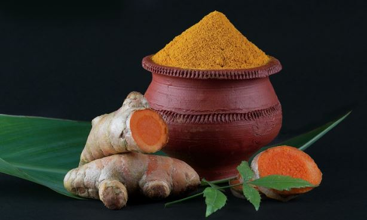

Golden Roots of Turmeric
Health Benefits
- Powerful anti-inflammatory properties
- Boosts immune function
- Supports digestion
Brewing Tips
- Mix with warm milk and honey
- Add black pepper to enhance absorption
- Steep for 5-7 minutes